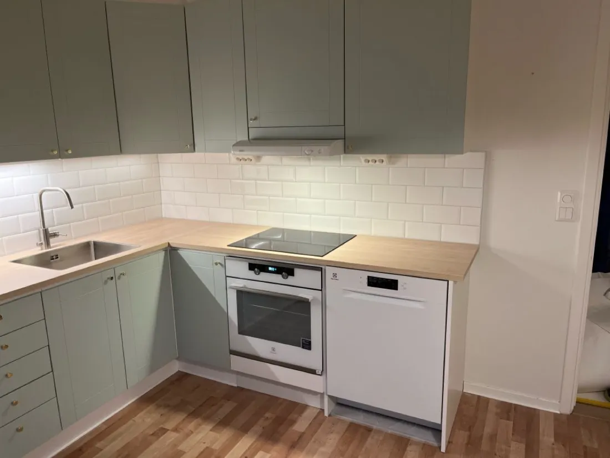
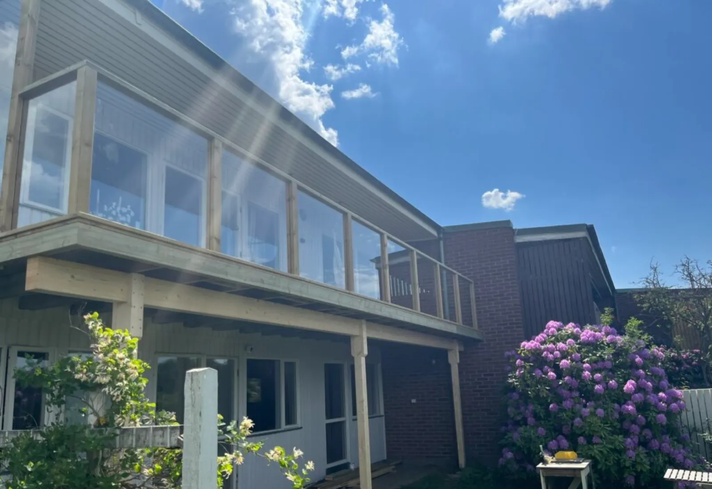

FÖRE / EFTERINNE

SNICKERI · RENOVERING · MONTAGE / GÖTEBORG
Från det som behöver fixas till det du länge har velat förändra. Vi hjälper dig med snickeri och renovering, i och runt Göteborg.
NÄRA TILL HJÄLPEN
En list som saknas. Ett kök som behöver nytt liv. En yta som kan bli något mer.
Snickare031 hjälper både med vardagens mindre byggjobb och större förändringar. Vi går igenom det du vill få gjort och hur arbetet kan läggas upp.
Lär känna ossVAD BEHÖVER DU HJÄLP MED?
FRÅN VÅRA ARBETEN
Håller vad han lovar och kommer i tid.
Magnus
Byte av vindskivor, Mölndal
Publicerat på Dorunner 15 maj 2026
FÖR DIG, ER OCH HUSET
Renovering, snickeri och praktiska förbättringar i hemmet.
Berätta om ditt hemMontage, ombyggnad och service för arbetsplatsen.
Prata om ert uppdragHjälp med mindre åtgärder, underhåll och byggprojekt.
Beskriv föreningens behovEN ENKEL BÖRJAN
Vad vill du få gjort, var och när? Bilder och skisser ger oss en bra start.
Vi pratar om förutsättningarna och tar fram underlag för en kostnadsfri offert.
När vi är överens om omfattning och upplägg tar arbetet nästa steg.
DITT NÄSTA PROJEKT BÖRJAR HÄR
En liten åtgärd eller ett större lyft.
Berätta, så börjar vi där.